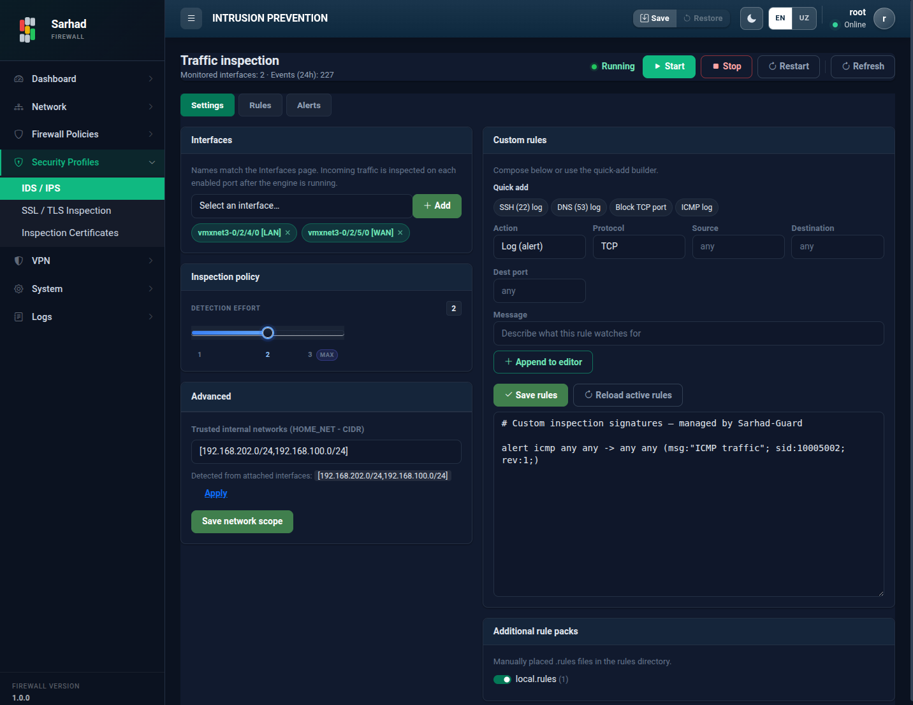
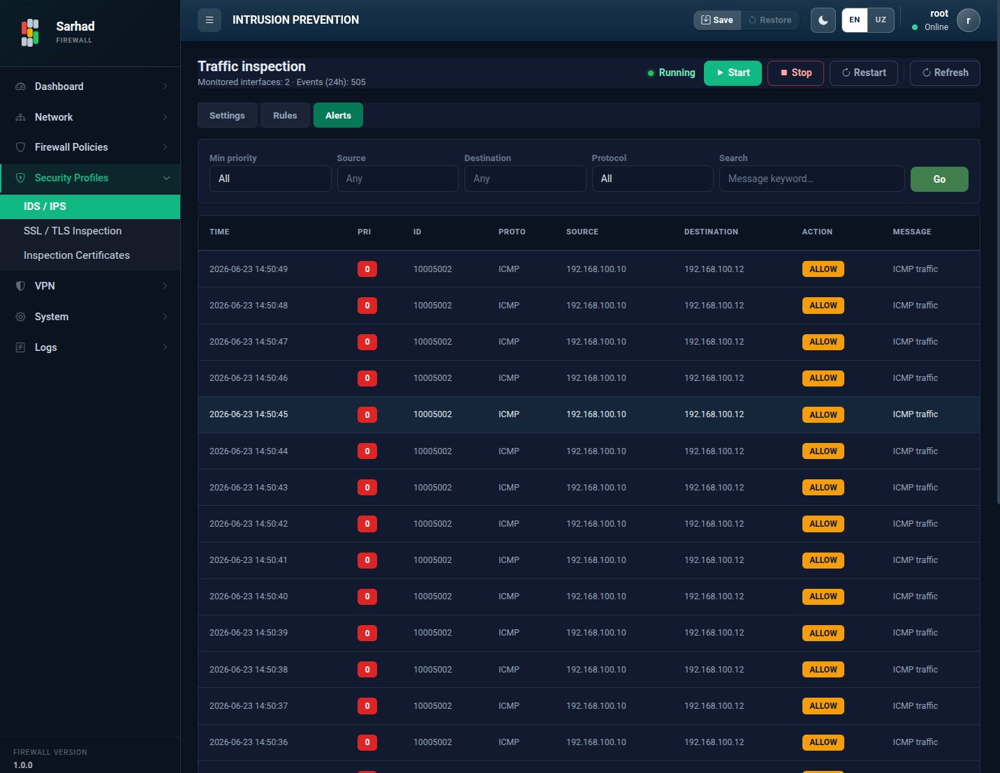

1. Hujumlarni aniqlash va oldini olish (IDS/IPS)
Sarhad NGFW tarmoqdagi shubhali va zararli faoliyatni aniqlash hamda oldini
olish uchun o’rnatilgan IDS/IPS tizimidan foydalanadi. Tizim Snort dvigateli
asosida ishlaydi, shuning uchun maxsus qoidalar Snort sintaksisida yoziladi.
Ushbu bo’limga o’tish uchun chap menyudan Security → Intrusion Prevention
bo’limini tanlang (/intrusion-prevention).
1.1. Asosiy tushunchalar
IDS (Intrusion Detection System) — hujumlarni aniqlaydi va ogohlantirish (alert) yaratadi, lekin trafikni to’xtatmaydi.
IPS (Intrusion Prevention System) — hujumlarni aniqlash bilan birga zararli trafikni to’xtatadi (bloklaydi).
Tizim tarmoq paketlarini maxsus qoidalar (rules) to’plami bilan solishtiradi. Agar paket biror qoidaga (masalan, ma’lum bir virus yoki hujum imzosiga) mos kelsa, tizim ogohlantirish yaratadi yoki paketni bloklaydi.
Sahifa uch tabdan iborat: Settings (sozlash), Rules (qoidalar manbalari) va Alerts (ogohlantirishlar). Yuqorida xizmatni boshqarish tugmalari (Start, Stop, Restart) joylashgan.
Tip
Agar kiritilgan o’zgarishlar darhol ko’rinmasa, sahifaning yuqori burchagidagi Refresh tugmasini bosing.
1.2. Settings tabi — yoqish va sozlash
{kind=link}

1.2.1. Tekshiriladigan interfeyslar
Interfaces bo’limida IDS/IPS qaysi interfeyslar trafigini tekshirishi belgilanadi. Kerakli interfeysni tanlab, Add tugmasi bilan qo’shing. Tekshiruv faqat shu interfeyslarga qo’llaniladi.
1.2.2. Tekshiruv siyosati
Inspection policy — tekshiruv qat’iyligi darajasi.
Detection effort — aniqlash chuqurligi (yuqori daraja ko’proq tahdidni topadi, biroq ko’proq resurs talab qiladi).
1.2.3. Advanced — HOME tarmog’i (network scope)
Advanced bo’limida himoyalanadigan ichki tarmoq (HOME network) belgilanadi. Tizim tanlangan interfeyslar asosida mos tarmoqni avtomatik taklif qiladi:
Taklif qilingan qiymatni qo’llash uchun Apply tugmasini bosing (yoki tarmoqni qo’lda kiriting, masalan
192.168.0.0/16).So’ngra Save network scope tugmasini bosib, tarmoq doirasini saqlang.
To’g’ri belgilangan HOME tarmog’i tizimga “ichki” va “tashqi” trafikni farqlash imkonini beradi.
1.2.4. Maxsus qoidalar (custom rules)
Tashqi manbalardan tashqari, o’zingizning maxsus qoidalaringizni Snort sintaksisida yozishingiz mumkin. Buni ikki usulda qilish mumkin:
Quick add (namunaviy qoidalar) — tayyor namunalar yordamida qoida tuzish. Tayyor namunalardan birini tanlasangiz (masalan,
SSH (22) log,DNS (53) log,Block TCP portyoki QUIC trafigini bloklash), maydonlar avtomatik to’ldiriladi. So’ngra quyidagilarni moslang:Action —
Log (alert)(ogohlantirish),Drop(tashlab yuborish) yokiReject(rad etish).Protocol — TCP, UDP, ICMP yoki IP (any).
Source / Destination — manba va manzil (yoki
any).Dest port — manzil porti.
Message — qoida ishga tushganda yoziladigan izoh.
So’ng Append to editor tugmasini bosing — qoida quyidagi tahrirlagichga qo’shiladi.
Qo’lda yozish — qoidalarni to’g’ridan-to’g’ri tahrirlagich (editor) oynasiga Snort sintaksisida yozish.
Qoidalarni yozib bo’lgach, Save rules tugmasini bosing. Faol qoidalarni qayta yuklash uchun Reload active rules tugmasidan foydalaning.
Important
Maxsus qoidalar ishlashi uchun pastdagi Additional rule packs bo’limida local rules (mahalliy qoidalar) yoqilgan bo’lishi shart. Aks holda siz yozgan qoidalar qo’llanmaydi.
1.3. Rules tabi — qoidalar manbalari

Bu tabda tayyor qoidalar to’plamlari (rule sources) yuklab olinadi va yangilab turiladi:
Community — bepul, ochiq qoidalar to’plami (kalit talab qilmaydi).
Talos — kengaytirilgan qoidalar to’plami (obuna kaliti talab qilishi mumkin; kalitni manba kartasidagi maydonga kiriting).
Har bir manba uchun:
Download tugmasini bosib qoidalarni yuklab oling. Holat ko’rsatkichi yuklangan qoidalar sonini (
N rules) yokiNot downloadedni ko’rsatadi.Auto-update tugmachasini yoqib, yangilanish oralig’ini (
Every 6h,12hyoki24h) tanlang — shunda qoidalar muntazam avtomatik yangilanib turadi.
1.4. Alerts tabi — ogohlantirishlar
{kind=link}

Alerts tabida tizim aniqlagan barcha hodisalar jadval ko’rinishida ko’rsatiladi. Ustunlar:
Ustun |
Tavsifi |
|---|---|
Time |
Hodisa sodir bo’lgan sana va vaqt. |
Pri |
Muhimlik darajasi (priority). Raqam qancha kichik bo’lsa, tahdid shuncha jiddiy. |
ID |
Ishga tushgan qoidaning identifikatori (signature ID / SID). |
Proto |
Hodisaga tegishli protokol (TCP, UDP, ICMP va h.k.). |
Source |
Trafikning manba IP manzili (va porti) — hujum qayerdan kelgani. |
Destination |
Trafikning manzil IP manzili (va porti) — nishon. |
Action |
Tizim bajargan amal: |
Message |
Hodisaning tavsifi — qaysi tahdid yoki holat aniqlangani. |
Ogohlantirishlarni ko’rib chiqib, takror yoki noto’g’ri (false positive) qoidalarni sozlash orqali tizimni aniqlashtirib borish mumkin.
Note
IPS rejimida (Drop / Reject) noto’g’ri sozlangan qoidalar haqiqiy
(zararsiz) trafikni ham bloklab qo’yishi mumkin. Shu sababli yangi
qoidalarni avval Log (alert) rejimida sinab ko’rib, ishonch hosil
qilgandan so’ng bloklash rejimiga o’tkazish tavsiya etiladi.